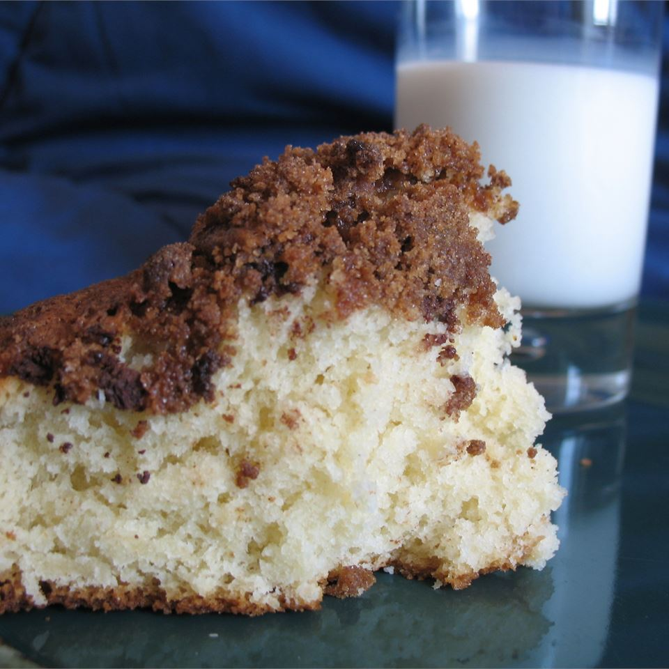

Coffee Cake Recipe

Description
A very simple and quick coffee cake recipe that is sure to
please. Don't underestimate the flavor.
Ingredients
- 1 ½ cups all-purpose flour
<1i> ½ teaspoons baking powder
- 6 tablespoons white sugar
- ½ teaspoon salt
- ⅓ cup shortening
- ½ cup milk
- 1 egg
- ½ teaspoon vanilla extract
- 2 tablespoons butter, melted
- ½ cup brown sugar
- 2 tablespoons all-purpose flour
- ½ teaspoon ground cinnamon
Steps
- Preheat oven 425 degrees F. Grease and flour 9 in pan
- In large bowl mix flour, baking powder, sugar and salt.
Put in shortening.
- In seperate small bowl, beat egg well, stir in milk and
vanilla. Add mixture to flour mixture. Stir til barely
blended.
- Pour batter into pan. Put slices of butter on top.
- In bowl mix brown sugar 2 tbsp flour and 1/2 teaspoon
cinnamon. Sprinkle on cake. Bake in onen 15-20 minutes
or until done.